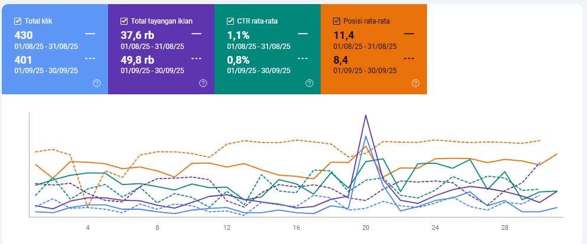

Laporan SEO Agustus–September 2025
Diupdate: 2025-10-01 — Sumber data: Google Search Console.
Screenshot:

Ahlifumigasi.com — Ringkasan Performa
Agustus → September 2025
| Metrik | Agustus | September | Perubahan Absolut | Perubahan % | Tren |
|---|---|---|---|---|---|
| Klik | 70 | 77 | +7 | +10% | ↗ |
| Tayangan | 5160 | 4330 | -830 | -16.1% | ↘ |
| CTR | 1.37% | 1.8% | +0.43 pp | +31.4% | ↗ |
| Posisi | 23.4 | 17.2 | -6.2 | -26.5% membaik | ↗ |
Executive summary
- Klik naik walau tayangan turun.
- CTR lebih baik.
- Posisi membaik signifikan.
Penyebab potensial
- Ranking naik untuk kueri utama.
- Snippet lebih menarik.
Tindakan prioritas
- Skalakan konten halaman yang naik.
- Pertahankan optimasi snippet.
KPI Monitoring
- CTR per kueri.
- Posisi rata-rata kueri utama.
Screenshot:
Sensorgempa.com — Ringkasan Performa
Agustus → September 2025
| Metrik | Agustus | September | Perubahan Absolut | Perubahan % | Tren |
|---|---|---|---|---|---|
| Klik | 430 | 400 | -30 | -7% | ↘ |
| Tayangan | 37553 | 49700 | +12147 | +32.3% | ↗ |
| CTR | 1.03% | 0.8% | -0.23 pp | -22.3% | ↘ |
| Posisi | 12.2 | 8.4 | -3.8 | -31.1% membaik | ↗ |
Executive summary
- Tayangan naik banyak.
- Klik turun karena CTR drop.
Penyebab potensial
- Kueri baru impresi besar tapi CTR rendah.
- Snippet kurang menarik.
Tindakan prioritas
- Optimasi title/meta kueri trending.
- Kuatkan konten realtime/news.
KPI Monitoring
- CTR kueri trending.
- Ranking kueri volume tinggi.
Screenshot:

Tanogaido.com — Ringkasan Performa
Agustus → September 2025
| Metrik | Agustus | September | Perubahan Absolut | Perubahan % | Tren |
|---|---|---|---|---|---|
| Klik | 1725 | 1740 | +15 | +0.9% | ↗ |
| Tayangan | 225832 | 225000 | -832 | -0.4% | ↘ |
| CTR | 0.75% | 0.8% | +0.05 pp | +6.7% | ↗ |
| Posisi | 19.7 | 13.8 | -5.9 | -29.9% membaik | ↗ |
Executive summary
- Klik stabil, posisi membaik drastis.
Penyebab potensial
- Peningkatan ranking kueri utama.
Tindakan prioritas
- Perkuat konten halaman yang naik.
- Testing snippet.
KPI Monitoring
- CTR kueri top 20.
- Ranking kueri volume besar.
Screenshot:
Herbmedicineindonesia.com — Ringkasan Performa
Agustus → September 2025
| Metrik | Agustus | September | Perubahan Absolut | Perubahan % | Tren |
|---|---|---|---|---|---|
| Klik | 17 | 20 | +3 | +17.6% | ↗ |
| Tayangan | 3835 | 4330 | +495 | +12.9% | ↗ |
| CTR | 0.48% | 0.7% | +0.22 pp | +45.8% | ↗ |
| Posisi | 59.0 | 32.2 | -26.8 | -45.4% membaik | ↗ |
Executive summary
- Semua metrik membaik signifikan.
Penyebab potensial
- Ranking naik dari kueri baru.
- Snippet lebih efektif.
Tindakan prioritas
- Lanjutkan optimasi konten & link.
KPI Monitoring
- CTR kueri impresi >100.
- Posisi keyword target.
Screenshot:

Imporbarangjepang.com — Ringkasan Performa
Agustus → September 2025
| Metrik | Agustus | September | Perubahan Absolut | Perubahan % | Tren |
|---|---|---|---|---|---|
| Klik | 14 | 19 | +5 | +35.7% | ↗ |
| Tayangan | 1118 | 973 | -145 | -13.0% | ↘ |
| CTR | 1.1% | 2.0% | +0.9 pp | +81.8% | ↗ |
| Posisi | 19.5 | 17.2 | -2.3 | -11.8% membaik | ↗ |
Executive summary
- Klik naik signifikan walau impresi turun.
- CTR melonjak 2x lipat.
Penyebab potensial
- Ranking membaik untuk kueri berniat beli.
- Snippet lebih menarik.
Tindakan prioritas
- Optimasi snippet kueri komersial.
- Perkuat konten produk & panduan impor.
KPI Monitoring
- CTR kueri komersial.
- Klik total mingguan.